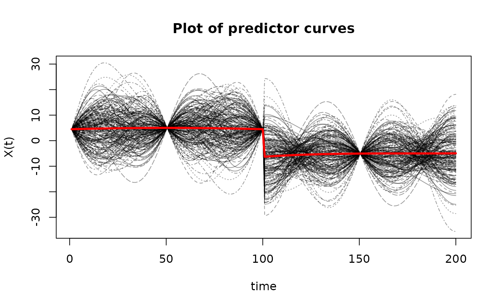
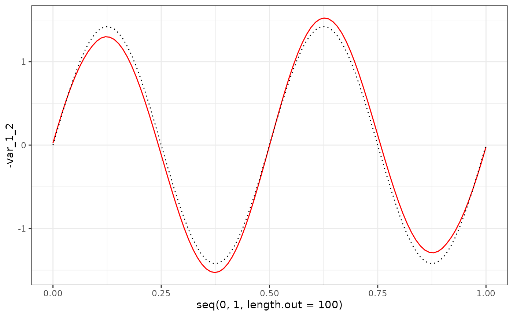
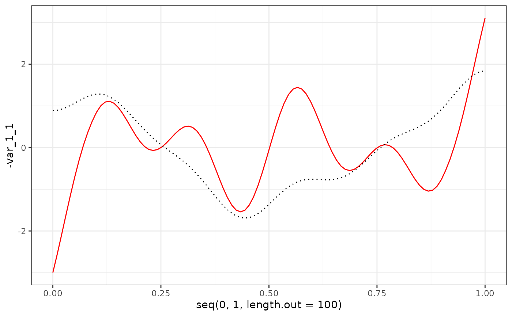
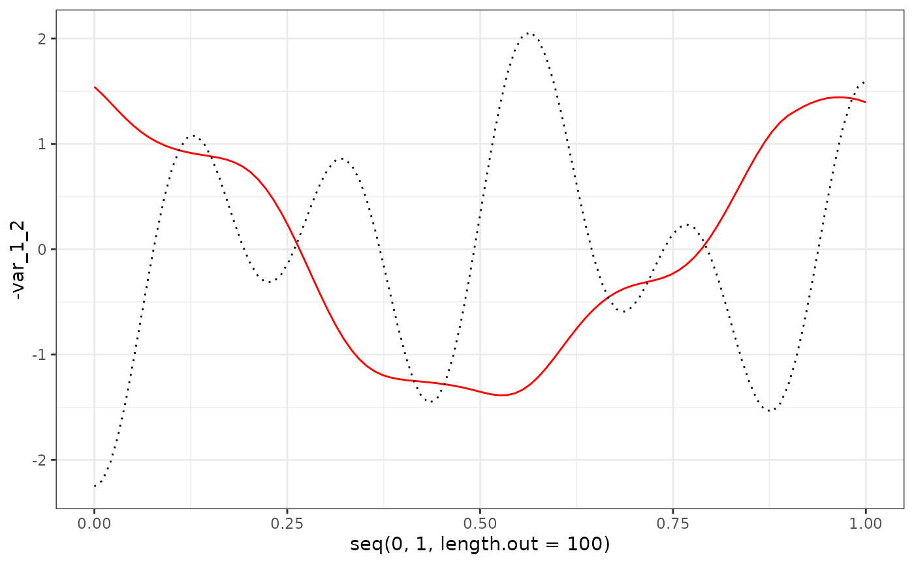
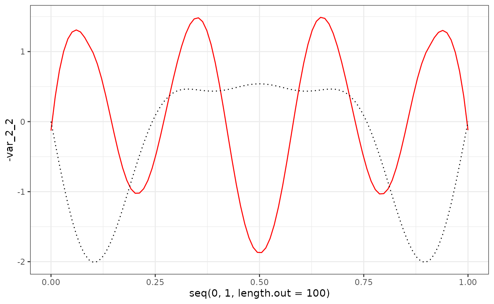

Simulated_Data_Analysis
Simulated_Data_Analysis.RmdSimulate Data
Covariates
library(FunOnFun)
library(fdapace)
library(ggplot2)
t = seq(0, 1, length.out = 100)
n = 199
components = 3
mean_funs = list(
function(t) -2*(t-0.5)^2 + 5,
function(t) 3*(t-0.75)^3 - 5
)
eigen_funs_list = list(
list(
function(t) sin(2*pi*t),
function(t) sin(4*pi*t),
function(t) sin(6*pi*t)
),
list(
function(t) cos(3*pi*t),
function(t) cos(pi*t),
function(t) cos(5*pi*t)
)
)
lambdas = c(5, 3, 1)
X = FunOnFun::simMFPCA(16, t, n, 3, mean_funs, eigen_funs_list, lambdas, response = FALSE)Response
mean_funs = list(
function(t) 6*exp(-(t-1)^2),
function(t) -2*14^(t-0.5)
)
eigen_funs_list = list(
list(
function(t) cos(9*pi*t),
function(t) cos(5*pi*t),
function(t) cos(2*pi*t)
),
list(
function(t) sin(3*pi*t),
function(t) sin(5*pi*t),
function(t) sin(7*pi*t)
)
)
B = matrix(c(-1, 2, 3, -1, 1, 3, 5, 5, -3),
nrow = components,
ncol = components)
# B = diag(c(3, 3, 3))
Y = FunOnFun::simMFPCA(16, t, n, 3, mean_funs, eigen_funs_list, lambdas, response = TRUE, B = B)
sigma = 0.001
E = matrix(rnorm(2*length(t)*n, mean = 0, sd = sigma), n, 2*length(t))
Y$X = Y$X + EPlot Simulated Data
matplot(t(X$X),
type='l',
ylab='X(t)',
xlab='time',
main='Plot of predictor curves',
col=rgb(0,0,0,alpha=0.4))
matlines(apply(t(X$X), 1, mean),
type='l',
lwd=3,
lty=1,
col="red")
FPCA
df = X_miss %>% FunOnFun::tibbleFormat(t) %>% FunOnFun::fpcaFormat(id_col = "id")
df_Y = Y_miss %>% FunOnFun::tibbleFormat(t) %>% FunOnFun::fpcaFormat(id_col = "id")
res_X1 = fdapace::FPCA(df$Variable1,
df$Time,
list(dataType = "Sparse",
error = F,
kernel = "epan",
verbose = F,
nRegGrid = length(t)))
res_X2 = fdapace::FPCA(df$Variable2,
df$Time,
list(dataType = "Sparse",
error = F,
kernel = "epan",
verbose = F,
nRegGrid = length(t)))
res_Y1 = fdapace::FPCA(df_Y$Variable1,
df_Y$Time,
list(dataType = "Sparse",
error = T,
kernel = "epan",
verbose = F,
nRegGrid = length(t)))
res_Y2 = fdapace::FPCA(df_Y$Variable2,
df_Y$Time,
list(dataType = "Sparse",
error = T,
kernel = "epan",
verbose = F,
nRegGrid = length(t),
methodSelectK = 3)) # TODO: CHECK THISVisualize FPCA
act = data.frame(act1 = Y$mu[1:100],
act2 = Y$mu[101:200])
hat = data.frame(hat1 = res_Y1$mu,
hat2 = res_Y2$mu)
hat %>%
ggplot() +
geom_line(aes(x = seq(0, 1, length.out = 100), y = hat1)) +
geom_line(data = act, aes(x = seq(0, 1, length.out = 100), y = act1), linetype = "dashed") +
theme_bw()
hat %>%
ggplot() +
geom_line(aes(x = seq(0, 1, length.out = 100), y = hat2)) +
geom_line(data = act, aes(x = seq(0, 1, length.out = 100), y = act2), linetype = "dashed") +
theme_bw()
phi_X2_df = Y$phi[101:200,] %>% as.data.frame()
res_Y2$phi[, 1:3] %>%
as.data.frame() %>%
ggplot() +
geom_line(aes(x = t, y = V1), col = "red") +
geom_line(data = phi_X2_df, aes(x = t, y = V1), col = "red", linetype = "dashed") +
theme_bw()
res_Y2$phi[, 1:3] %>%
as.data.frame() %>%
ggplot() +
geom_line(aes(x = t, y = V2), col = "red") +
geom_line(data = phi_X2_df, aes(x = t, y = V2), col = "red", linetype = "dashed") +
theme_bw()
res_Y2$phi[, 1:3] %>%
as.data.frame() %>%
ggplot() +
geom_line(aes(x = t, y = V3), col = "red") +
geom_line(data = phi_X2_df, aes(x = t, y = V3), col = "red", linetype = "dashed") +
theme_bw()
Irregular MFPCA
res = FunOnFun::irregMFPCA(components = 3,
split = T,
res_X1,
res_X2)
res_Y = FunOnFun::irregMFPCA(components = 3,
split = T,
res_Y1,
res_Y2)Check results
eigenf = res$unstacked_phi
colnames(eigenf) = c("var_1_1", "var_1_2", "var_1_3", "var_2_1", "var_2_2", "var_2_3")
eigens = res$xi
colnames(eigens) = c("comp_1", "comp_2", "comp_3")
eigenf %>%
as.data.frame() %>%
ggplot() +
geom_line(aes(x = seq(0, 1, length.out = 100), y = var_1_1), col = "red") +
geom_line(aes(x = seq(0, 1, length.out = 100), y = X$phi[1:100, 1]), col = "black", linetype = "dotted") +
theme_bw()
eigenf %>%
as.data.frame() %>%
ggplot() +
geom_line(aes(x = seq(0, 1, length.out = 100), y = -var_1_2), col = "red") +
geom_line(aes(x = seq(0, 1, length.out = 100), y = X$phi[1:100, 2]), col = "black", linetype = "dotted") +
theme_bw()
eigenf %>%
as.data.frame() %>%
ggplot() +
geom_line(aes(x = seq(0, 1, length.out = 100), y = -var_1_3), col = "red") +
geom_line(aes(x = seq(0, 1, length.out = 100), y = X$phi[1:100, 3]), col = "black", linetype = "dotted") +
theme_bw()
eigenf %>%
as.data.frame() %>%
ggplot() +
geom_line(aes(x = seq(0, 1, length.out = 100), y = var_2_1), col = "red") +
geom_line(aes(x = seq(0, 1, length.out = 100), y = X$phi[101:200, 1]), col = "black", linetype = "dotted") +
theme_bw()
eigenf %>%
as.data.frame() %>%
ggplot() +
geom_line(aes(x = seq(0, 1, length.out = 100), y = -var_2_2), col = "red") +
geom_line(aes(x = seq(0, 1, length.out = 100), y = X$phi[101:200, 2]), col = "black", linetype = "dotted") +
theme_bw()
eigenf %>%
as.data.frame() %>%
ggplot() +
geom_line(aes(x = seq(0, 1, length.out = 100), y = -var_2_3), col = "red") +
geom_line(aes(x = seq(0, 1, length.out = 100), y = X$phi[101:200, 3]), col = "black", linetype = "dotted") +
theme_bw()
eigens = data.frame(est1 = eigens[,1]/sqrt(res$Dhat[1,1]),
est2 = eigens[,2]/sqrt(res$Dhat[2,2]),
est3 = eigens[,3]/sqrt(res$Dhat[3,3]),
act1 = X$xi[, 1],
act2 = X$xi[, 2],
act3 = X$xi[, 3])
eigens %>%
ggplot(aes(x = est1, y = act1)) +
geom_point() +
geom_abline(intercept = 0, slope = 1, col = "red") +
geom_smooth(method = "lm", se = F) +
theme_bw()
#> `geom_smooth()` using formula = 'y ~ x'
eigens %>%
ggplot(aes(x = -est2, y = act2)) +
geom_point() +
geom_abline(intercept = 0, slope = 1, col = "red") +
geom_smooth(method = "lm", se = F) +
theme_bw()
#> `geom_smooth()` using formula = 'y ~ x'
eigens %>%
ggplot(aes(x = -est3, y = act3)) +
geom_point() +
geom_abline(intercept = 0, slope = 1, col = "red") +
geom_smooth(method = "lm", se = F) +
theme_bw()
#> `geom_smooth()` using formula = 'y ~ x'
eigenf = res_Y$unstacked_phi
colnames(eigenf) = c("var_1_1", "var_1_2", "var_1_3", "var_2_1", "var_2_2", "var_2_3")
eigens = res_Y$xi %>% sweep(2, sqrt(diag(res_Y$Dhat)), "/")
colnames(eigens) = c("comp_1", "comp_2", "comp_3")
act = qr.Q(qr(Y$xi %*% B)) * sqrt(199)
eigens = data.frame(est1 = eigens[,1],
est2 = eigens[,2],
est3 = eigens[,3],
act1 = -act[, 1],
act2 = act[, 2],
act3 = -act[, 3])
guess_actual_functions = Y$phi %*% eigen(t(B)%*%B)$vectors %>% as.data.frame()
eigenf %>%
as.data.frame() %>%
ggplot() +
geom_line(aes(x = seq(0, 1, length.out = 100), y = -var_1_1), col = "red") +
geom_line(aes(x = seq(0, 1, length.out = 100), y = guess_actual_functions[1:100, 1]), col = "black", linetype = "dotted") +
theme_bw()
eigenf %>%
as.data.frame() %>%
ggplot() +
geom_line(aes(x = seq(0, 1, length.out = 100), y = -var_1_2), col = "red") +
geom_line(aes(x = seq(0, 1, length.out = 100), y = guess_actual_functions[1:100, 2]), col = "black", linetype = "dotted") +
theme_bw()
eigenf %>%
as.data.frame() %>%
ggplot() +
geom_line(aes(x = seq(0, 1, length.out = 100), y = -var_1_3), col = "red") +
geom_line(aes(x = seq(0, 1, length.out = 100), y = guess_actual_functions[1:100, 3]), col = "black", linetype = "dotted") +
theme_bw()
eigenf %>%
as.data.frame() %>%
ggplot() +
geom_line(aes(x = seq(0, 1, length.out = 100), y = var_2_1), col = "red") +
geom_line(aes(x = seq(0, 1, length.out = 100), y = guess_actual_functions[101:200, 1]), col = "black", linetype = "dotted") +
theme_bw()
eigenf %>%
as.data.frame() %>%
ggplot() +
geom_line(aes(x = seq(0, 1, length.out = 100), y = -var_2_2), col = "red") +
geom_line(aes(x = seq(0, 1, length.out = 100), y = guess_actual_functions[101:200, 2]), col = "black", linetype = "dotted") +
theme_bw()
eigenf %>%
as.data.frame() %>%
ggplot() +
geom_line(aes(x = seq(0, 1, length.out = 100), y = -var_2_3), col = "red") +
geom_line(aes(x = seq(0, 1, length.out = 100), y = guess_actual_functions[101:200, 3]), col = "black", linetype = "dotted") +
theme_bw()
eigens %>%
ggplot(aes(x = est1, y = act1)) +
geom_point() +
geom_abline(intercept = 0, slope = 1, col = "red") +
geom_smooth(method = "lm", se = F) +
theme_bw()
#> `geom_smooth()` using formula = 'y ~ x'
eigens %>%
ggplot(aes(x = -est2, y = act2)) +
geom_point() +
geom_abline(intercept = 0, slope = 1, col = "red") +
geom_smooth(method = "lm", se = F) +
theme_bw()
#> `geom_smooth()` using formula = 'y ~ x'
eigens %>%
ggplot(aes(x = -est3, y = act3)) +
geom_point() +
geom_abline(intercept = 0, slope = 1, col = "red") +
geom_smooth(method = "lm", se = F) +
theme_bw()
#> `geom_smooth()` using formula = 'y ~ x'Regression
# response = res_Y$xi
# predictor = res$xi
# Normalized Versions
predictor = sweep(res$xi, 2, sqrt(diag(res$Dhat)), "/")
response = sweep(res_Y$xi, 2, sqrt(diag(res_Y$Dhat)), "/")
mod = lm(response ~ -1 + predictor)
B; mod$coefficients
#> [,1] [,2] [,3]
#> [1,] -1 -1 5
#> [2,] 2 1 5
#> [3,] 3 3 -3
#> [,1] [,2] [,3]
#> predictor1 -0.1747657 -0.6758188 -0.7154803
#> predictor2 -0.4557008 0.7001524 -0.5494227
#> predictor3 -0.8727301 -0.2302841 0.4299648